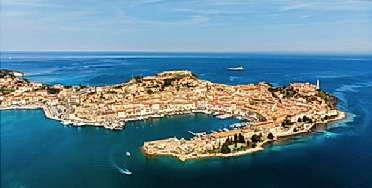
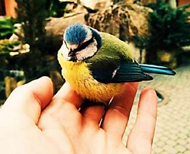

Борис Акунин
Мой календарь
Романтичнее, конечно, выбирать журавля в небе, потому что небо высокое, а журавль импозантней синицы. Иногда так и нужно делать. Но не сегодня. Сегодня у нас День Синицы. Если вы колеблетесь, не рискнуть ли малым ради большого, не поставить ли всё на зеро, вспомните о Наполеоне Бонапарте - и воздержитесь.
26 февраля 1815 года Корсиканец бежал из Малого Мира, с уютного острова Эльба, и отправился вновь завоевывать Большой Мир. Чем это закончится, мы знаем: сто дней величия, потом Ватерлоо, плен и тоскливое угасание на неуютном острове Святой Елены.
А между тем синица была очень неплоха.
Вот чудесный остров Эльба в ласковом Тирренском море: оливковые деревья, виноградники, идиллические пейзажи.
Можно было вести тихую пенсионную жизнь, вспоминать с ветеранами дни былой славы, писать мемуары. Ждать, что Франция соскучится по тебе и сама позовет обратно. Ведь сорок пять лет всего было человеку, по нашим понятиям еще молодость. А можно было и не ждать реставрации, а просто жить отставным Экклесиастом, который сказал себе: «И оглянулся я на все дела мои, которые сделали руки мои, и на труд, которым трудился я, делая их: и вот, всё - суета и томление духа».
Но нет. 26 февраля Наполеон сел на корабль, и отправился ловить журавля, и поймал его, но в руках не удержал - журавль сдох, а вместе с ним погибли 120 тысяч человек, жертвы наполеоновской мегаломании.
Лозунг сегодняшнего дня: лучше меньше, да лучше.
И смотрите, какая синица славная: